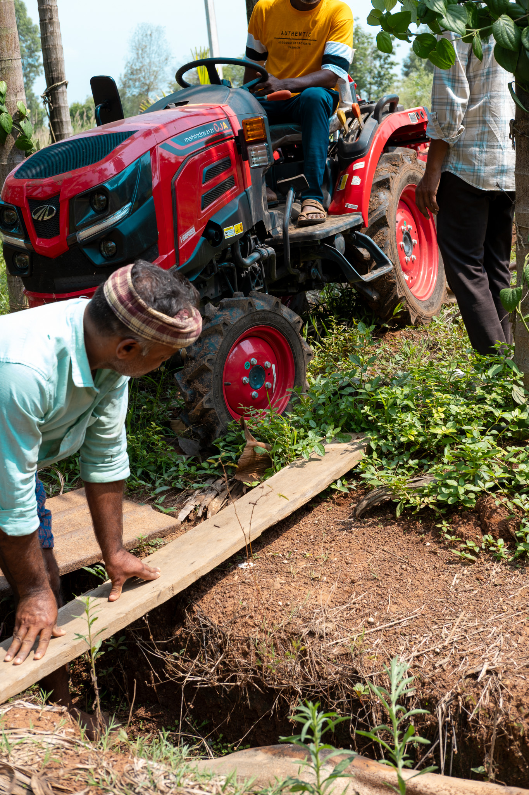

Most agri-tech gets validated in a greenhouse or a slide deck. Aré Guḍi is 50+ acres of managed, instrumented Western Ghats farmland — monsoon, lateritic soil, a working areca-pepper system, and a team that can run your trial properly.
Sensors, automation, and field hardware that has to survive real conditions.
Inputs, amendments, and soil-science teams needing live plots and baselines.
Biodiversity, water, and monitoring tools that need a working landscape.
The structured, cohort program. Application-only — run by Global Launch Base.
Vetted, by approval, 5-night minimum — come and work on the ground yourself.